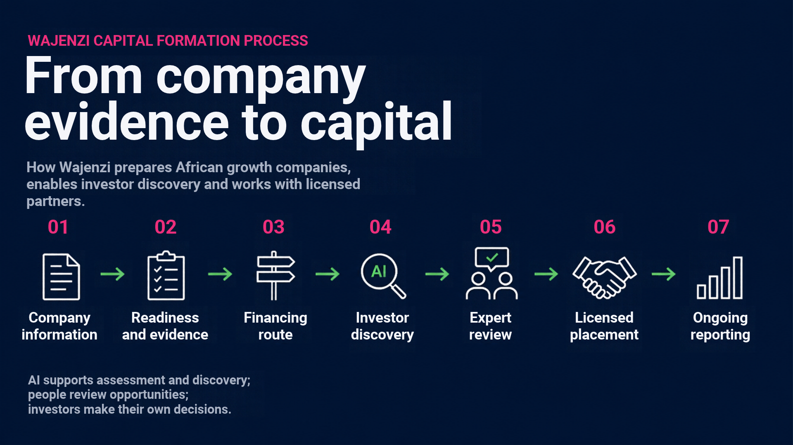

Raising across borders sounds complex. It doesn't have to be. Here's the path every issuer travels with us, what we handle at each stage, and an illustrative example of how a typical raise comes together.
A typical engagement runs several months end to end. Timelines vary with each company's readiness — but the path, and who handles what, stays the same.

Tell us about your business, your funding needs and your plans. A short diagnostic tells us whether a market raise is a realistic route — and if it isn't, we say so early.
You leave with: a readiness snapshot, an indicative raise size and instrument, and a clear go / no-go.
We organise your financial, operational and governance information, highlight the gaps investors will want closed, and prepare the company for further review.
You leave with: organised, review-ready information and a prioritised list of what to strengthen.
We assess which capital structures may suit the business and its needs — debt, bonds or pooled vehicles — subject to feasibility and the involvement of appropriate partners.
You leave with: a shortlist of feasible structures and an indicative term sheet to work from.
Where there is a potential fit, we facilitate introductions through duly authorised intermediaries — reaching institutions, family offices, development finance and the diaspora.
You leave with: introductions to aligned investors and support managing the process to a close.
After a raise, we help organise updates on business performance and agreed outcomes — so the relationship, and your access to capital, lasts well beyond a single round.
You leave with: a clear reporting cadence and a path to follow-on raises.
A hypothetical company, shown to make the structure concrete. The figures below are for explanation only — every real raise is built around the individual business.
Illustrative only. The company, figures and terms shown are hypothetical and provided purely to explain how a raise is structured. They do not represent an actual transaction, an offer or solicitation, or a guaranteed outcome. Every raise is structured to the individual company and subject to due diligence, market conditions and the involvement of duly authorised intermediaries.
Tell us about your business. The first conversation is a straight answer on whether a listed raise is right for you — and what it would take.